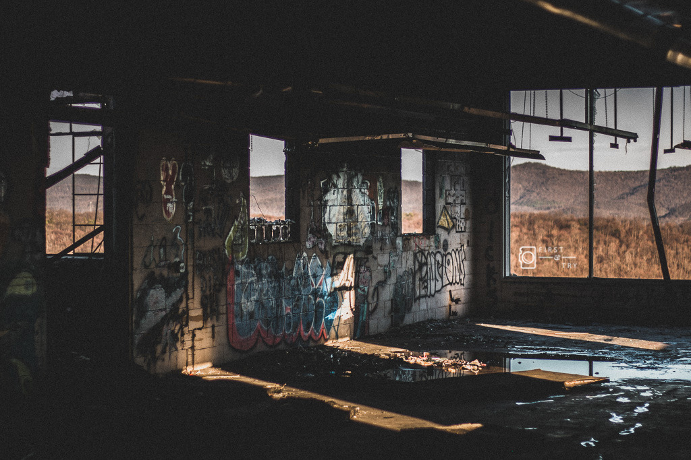

About Me
Hi, my name is Temesgen and I have been studying at Frostburg for about 5 years. As a result, I have experience in virtualization, ethical hacking, intrusion detection, web development, and computer forensics.
When I am not busy with school, I enjoy working out, taking photos, playing video games, and listening to music. I also enjoy working on any side projects found online to sharpen my web-development skills.
If you have any questions or would like to work together, feel free to contact me.
You are welcome to click the image below to be directed to my collection of photographs!
